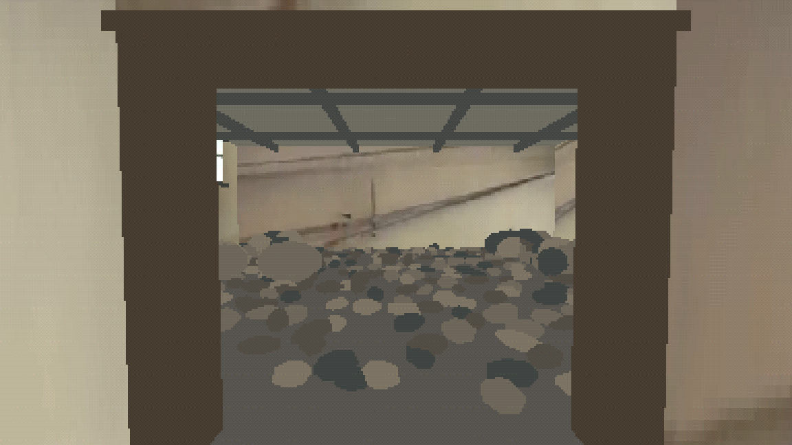
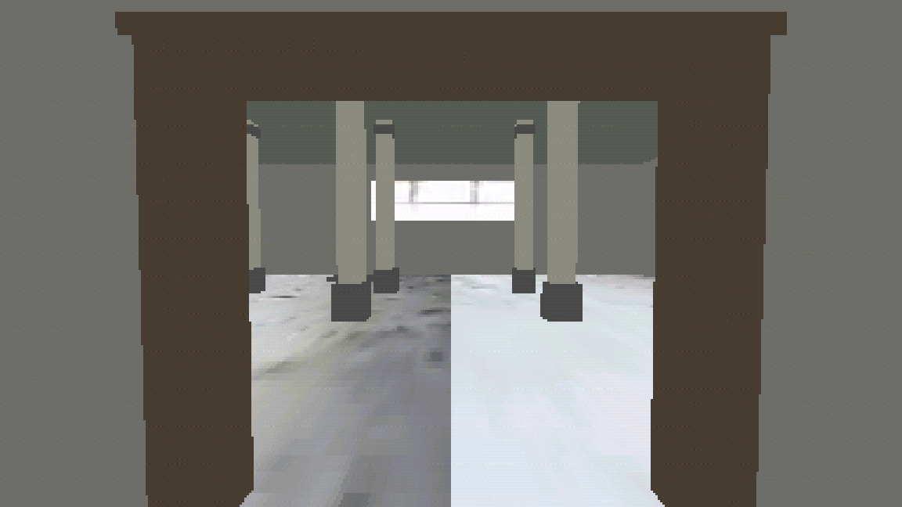
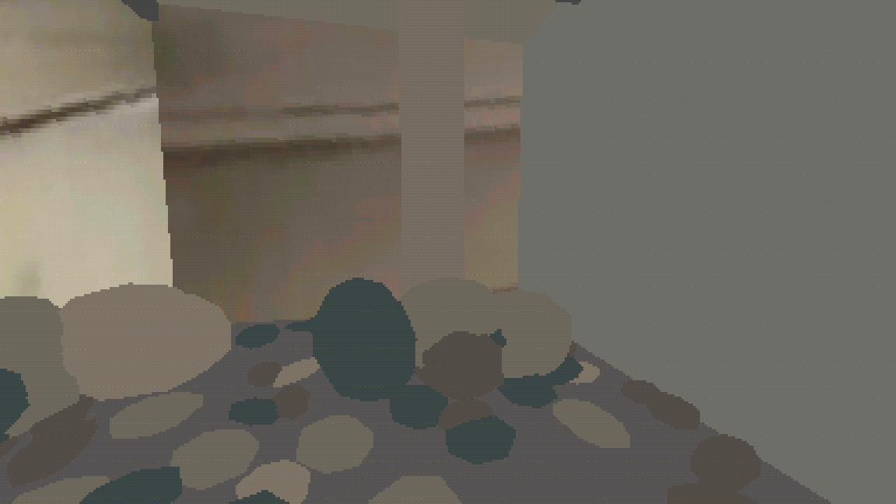
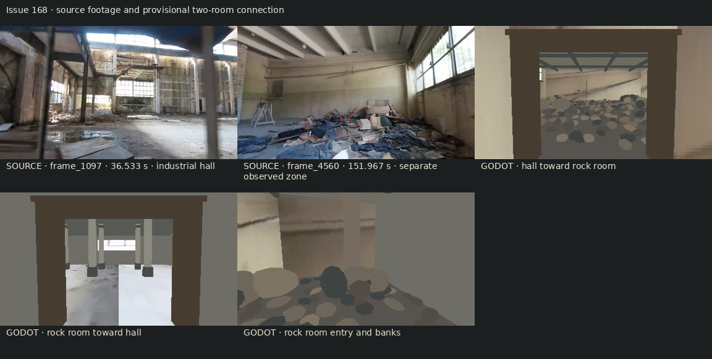

Accepted for this exact pair. The operator approved the authored doorway and assembled hall-to-rock walkthrough. The source video shows separate views; it does not prove this connection. The two socket adapters are catalogued for this pair only. Registration and scale calibration remain false.
Report · Run and test commands · Authored layout diagram · Source-to-room contact sheet · Protected input hashes · Capture iterations · Operator decision · Scoped catalog admission
The two video frames are from different timeline locations. They are provenance comparisons, not matched camera poses.




The first room is the accepted #167 hall. The second room uses the separately accepted standalone rock-room design. This exact connection is now accepted and catalogued as a tested pair; it does not claim source-video continuity or general socket reuse.